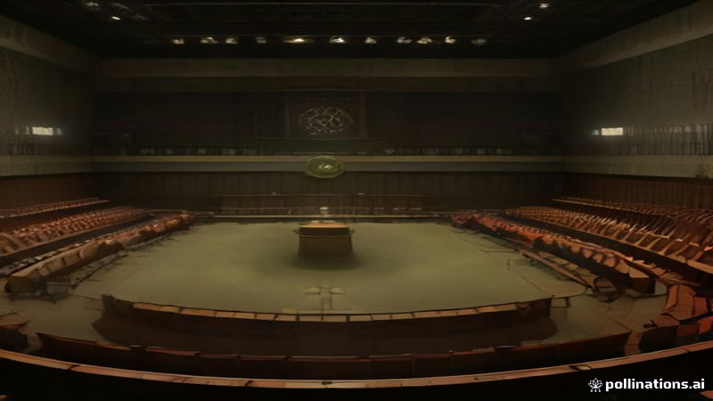

ইসরায়েলি বিরোধী নেতা গাদি আইসেনকটকে সরকার গঠনের দায়িত্ব দেওয়া হয়েছে
France 24, Al Jazeera English, DW · 2026-11-08
AI-generated illustrationরাষ্ট্রপতি আইজ্যাক হার্জেগের নির্দেশে আইসেনকটের কাছে ছয় সপ্তাহের মধ্যে জোট গঠন করে নেটানিয়াহুকে বদলানোর সুযোগ রয়েছে
ফ্রান্স ২৪ অনুসারে, ইসরায়েলের বিরোধী নেতা গাদি আইসেনকটকে রাষ্ট্রপতি আইজ্যাক হার্জেগ সরকার গঠনের আনুষ্ঠানিক ম্যান্ডেট দিয়েছেন। তাকে ছয় সপ্তাহের মধ্যে সম্ভাব্য জোট অংশীদারদের সঙ্গে আলোচনা করে পার্লামেন্টের সংখ্যাগরিষ্ঠতা অর্জন করতে হবে। আল জাজিরা ইংলিশ উল্লেখ করেছে যে আইসেনকট দেশকে গণতন্ত্রের ‘অপরিবর্তনীয় সীমা’র দিকে নিয়ে যাচ্ছে বলে সতর্ক করেছেন।
ডিডাব্লিউ জানিয়েছে যে রাজনৈতিক চ্যালেঞ্জের মধ্যে রয়েছে আরব ইসরায়েলি পার্টির সঙ্গে জোট গঠন, যা সংখ্যাত্মকভাবে সহজ হলেও রাজনৈতিকভাবে সংবেদনশীল, এবং শেষ পর্যন্ত বেনজামিন নেটানিয়াহুকে প্রধানমন্ত্রীর পদ থেকে সরিয়ে নেওয়া।
Read the original reporting at the links above.
English version
Israeli opposition leader Gadi Eisenkot tasked with forming new government
According to France 24, Israel's opposition leader Gadi Eisenkot has been formally assigned by President Isaac Herzog the mandate to form the next government. He now has up to six weeks to negotiate with potential coalition partners and secure a parliamentary majority. Al Jazeera English noted that Eisenkot warned the country is approaching a ‘point of no return’ for its democracy.
DW reported that the political challenges ahead include deciding whether to ally with Arab Israeli parties, which would be mathematically easier but politically sensitive, and ultimately replacing Benjamin Netanyahu as prime minister.